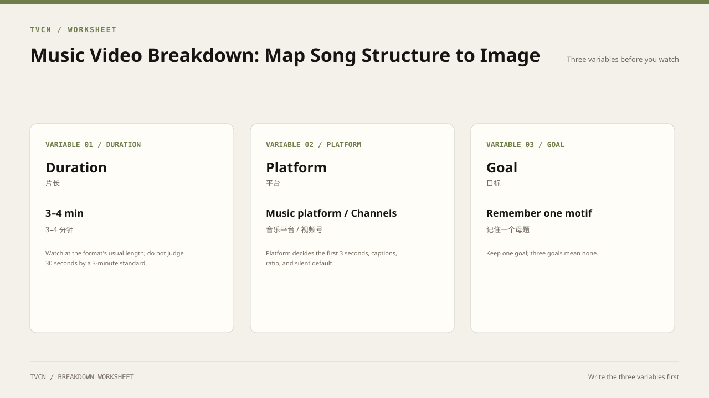

Fix Three Variables First
Fix three variables: three and a half minutes, music platform/Channels, and the goal is image escalating with the song. An MV is not a narrative short; mark song sections, motifs, then check whether the chorus escalates.
Sample note: the timecodes below are a teaching sample for this format's usual length. They do not correspond to one specific film and are not frame-accurate analysis. Use the same positions on your own film; do not treat these beats as the only answer.
Timecode Breakdown: 9 Beats
Watch in order; do not read commentary first. For each beat record four things: picture, sound, job, and steal or do-not-copy.
- 0:00–0:10 | Picture: intro gives one visual motif, no plot. Sound: song intro/ambience. Job: establish a rule. Steal: one repeatable action. Do not copy: a drone location intro.
- 0:10–0:30 | Picture: verse gives space and relationships; camera can slow. Sound: verse. Job: let viewers enter the world. Steal: one space plus one person. Do not copy: a new location per lyric.
- 0:30–0:50 | Picture: pre-chorus narrows: closer framing/smaller space. Sound: rhythm rises. Job: prepare escalation. Steal: narrow framing. Do not copy: strobe.
- 0:50–1:25 | Picture: first chorus escalation: same action bigger/faster/riskier. Sound: drums. Job: memory point. Steal: action escalation. Do not copy: effects only.
- 1:25–1:50 | Picture: verse two adds information: relationship change/new space. Sound: verse two. Job: avoid repetition. Steal: change one variable, not the theme. Do not copy: a whole new story.
- 1:50–2:15 | Picture: bridge holds one long take/still, letting viewers breathe. Sound: bridge. Job: contrast. Steal: one long take. Do not copy: keep accelerating.
- 2:15–2:50 | Picture: final chorus maxes out: all motifs, action at limit. Sound: final chorus. Job: peak. Steal: three motifs in one frame. Do not copy: pile every effect.
- 2:50–3:20 | Picture: outro returns to the first motif, changed. Sound: outro/ambience. Job: close. Steal: return to the motif. Do not copy: add a new location.
- 3:20–3:30 | Picture: hold on action/empty frame, no explanation. Sound: silence. Job: let the song end. Steal: stop on consequence. Do not copy: add plot captions.
Read the Structure
The spine is motif, space, narrowing, escalation, new information, breath, max escalation, return, hold. Images are not lyric illustrations; they need sections and a peak like the song.
Ask only three questions: what proof arrives in the first ten seconds; whether every ten to fifteen seconds adds information; whether the end lands one action, one change, or one question. If any is missing, a 3–4 min film falls apart.
Three Variables Before You Watch

Budget Order of Magnitude
Budget is a rough mainland-China production range, excluding media spend; it is an order of magnitude, not a quote. At the same length, a stage, cast, effects, or music rights can each double the cost.
- Low: RMB 10,000–30,000, three to five people, one location, two or three looks, one day.
- Mid: RMB 30,000–100,000, six to ten people, one or two locations, light/art, two days.
- High: RMB 100,000–500,000+, director, camera, art, wardrobe, post, multiple locations, three to seven days.
Three Structures You Can Steal
Steal structure, not images. These three still work when you change the subject.
- Mark chorus and turn before writing images.
- Keep three motifs; change one variable per section.
- Escalate the chorus through action, not strobe.
Three Reasons Not to Copy
Not “bad,” but built on different conditions; copying exposes your budget, platform, and audience.
- Do not copy one location per lyric: the song does not have that many places, and viewers cannot remember them.
- Do not copy a strobe-only chorus: without action escalation, it empties out.
- Do not copy a plot that overwhelms the song: viewers came for the music.
Breakdown Exercises
Do them before shooting; do not just read. Do the three in order, and the third must become a fifteen-second file.
- Watch muted; mark where motifs repeat.
- Mark chorus/bridge against the song; does the image escalate with it?
- Compress to sixty seconds: motif, first chorus, max escalation, return.
Image note. Covers, diagrams and step images on this page are editorial illustrations or structure diagrams, not photographs of a test performed here; they are not evidence of measured gear performance. Where an image is AI-assisted, the caption says so. Read the test conditions in the text before treating an image as proof.